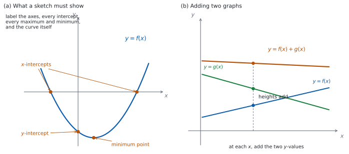
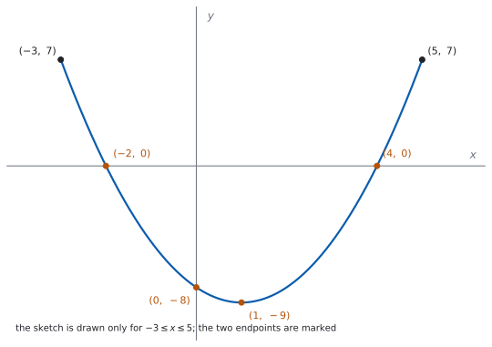

SL 2.3 — The graph of a function（関数のグラフ）
- \(y = f(x)\) のグラフが何を表しているかを説明できる。
- draw と sketch のちがいを知り、求められたほうの書き方ができる。
- 軸と key features（重要な特徴）に、もれなくラベルをつけられる。
- 表を作って、式に合った結び方（直線か、なめらかな曲線か）でグラフをかける。
- 文章で与えられた場面から、グラフを sketch できる。
- 電卓の画面のグラフを、紙に写しかえられる。
- \(2\) つの関数の和と差のグラフが、どうできているかが分かる。
The idea
1. グラフは、点の集まり
\(y = f(x)\) のグラフとは、\(x\) を domain（定義域）の中で動かしたときにできる点
\[ \bigl(x, \ f(x)\bigr) \tag{1}\]
をすべて集めたものです。
ですから、「点 \((p, q)\) がグラフの上にある」ことと「\(q = f(p)\) が成り立つ」ことは、同じことの言いかえです。
\(y = 2x + 1\) のグラフに、点 \((3, 7)\) はあるでしょうか。
\(x = 3\) を入れると \(2(3) + 1 = 7\) です。\(y\) 座標と合ったので、あります。
\((1, 4)\) はどうでしょう。\(2(1) + 1 = 3\) で、\(4\) とはちがいます。だからありません。
グラフを見なくても、代入だけで決まります。
2. draw と sketch はちがいます
シラバスの Guidance 欄に、はっきり書かれています。
Students should be aware of the difference between the command terms “draw” and “sketch”.
\(2\) つの語は、シラバスの Glossary of command terms で次のように定義されています。
Draw: Represent by means of a labelled, accurate diagram or graph, using a pencil. A ruler (straight edge) should be used for straight lines. Diagrams should be drawn to scale. Graphs should have points correctly plotted (if appropriate) and joined in a straight line or smooth curve.
Sketch: Represent by means of a diagram or graph (labelled as appropriate). The sketch should give a general idea of the required shape or relationship, and should include relevant features.
| Draw | Sketch | |
|---|---|---|
| 目盛り | 正確に。方眼紙に合わせる | だいたいでよい |
| 道具 | 鉛筆。直線は定規 | 手がきでよい |
| 点 | 正しい位置にとる | とらなくてよい |
| 形 | 正確 | 形が伝わればよい |
| ラベル | 必要 | 必要 |
公式集（formula booklet）の Topic 2 に印刷されているのは、2.1（直線の方程式と gradient formula）、2.6（軸の式）、2.7（解の公式と判別式）だけです。
2.3 の内容は、公式集には載っていません。
表 1 でいちばん大事なのは、いちばん下の行です。Glossary の Sketch の定義は labelled as appropriate と書いていますが、Topic 2 の Guidance が「All axes and key features should be labelled.」と重ねて求めています。ですからこの項目では、どちらでもラベルは要ります。
3. 何にラベルをつけるか
シラバスは、こう求めています。
All axes and key features should be labelled.

図 1 の (a) は、どこにラベルをつけるかを示したものです。図では場所の名前だけを書いていますが、答案では名前ではなく座標を書きます。 何を、どう書くかを次の表にまとめます。
| ラベルするもの | 書き方 |
|---|---|
| 軸 | \(x\)、\(y\)（場面があるときは量と単位） |
| \(x\) 切片・\(y\) 切片 | 座標で。\((4, 0)\) のように |
| 最大点・最小点 | 座標で。\((-2, 5)\) のように |
| 漸近線（asymptote） | 式で。\(x = 2\)、\(y = 0\) のように。線は点線で（SL 2.8 で扱います） |
| 曲線そのもの | \(y = f(x)\) |
| domain の端 | 制限があるときは、端の点も |
グラフに \(\bullet\) を打っただけでは、それがどこなのかが伝わりません。 \((3,0)\) のように座標を書いてください。
軸の目盛りに \(3\) と書いてあって、そこから点まで点線が引いてあるなら、それでもかまいません。読む人が値を読み取れることが要です。
4. 表を作ってかく
draw と言われたら、まず表を作ります。\(y = x^{2} - 2\) を \(-3 \le x \le 3\) でかいてみます。
| \(x\) | \(-3\) | \(-2\) | \(-1\) | \(0\) | \(1\) | \(2\) | \(3\) |
|---|---|---|---|---|---|---|---|
| \(y\) | \(7\) | \(2\) | \(-1\) | \(-2\) | \(-1\) | \(2\) | \(7\) |
表 3 の \(7\) つの点を打って、なめらかな曲線で結びます。
表に出てくるのはとびとびの点だけです。その間にも、グラフは続いています。
\(y = x^{2}-2\) は \(x = 0\) の近くでゆるやかに曲がっています。\((-1,-1)\)、\((0,-2)\)、\((1,-1)\) を線分で結ぶと、\(2\) 本の線分が出会う \((0,-2)\) に折れ曲がった角ができてしまいます。実際には角はありません。
式が曲線を表しているときは、曲線で結ぶ。 これが原則です。
5. 場面からグラフをかく
文章で与えられた場面から、グラフを sketch する問題も出ます。次の順に決めます。
- 何を横軸、何を縦軸にするか。 ふつう、時間などの「決めるほう」が横軸です。
- 軸に、量と単位を書く。 「\(t\)（分）」「\(V\)（リットル）」のように。
- 始まりの点と終わりの点。 場面の domain の両端です（SL 2.2 の第 6 節）。
- 形。 同じ時間に変わる量が同じなら直線（線分）。その量が変わっていくなら曲線。割合が途中で切りかわる場面なら、直線をつないだ折れ線になります。
「毎分 \(8\) リットルずつ減る」「毎時 \(3\) cm ずつ短くなる」のように、同じ時間に変わる「量」が同じなら、グラフは直線です。曲線にしてはいけません。
グラフが曲がるのは、同じ時間に変わる量そのものが変わるときです。
「\(\%\) ずつ」は別です。 「毎年 \(5\%\) ずつ減る」は、減る「量」が毎年ちがう（もとの量が減っていくから）ので、直線にはなりません。日本語の「一定の割合」は \(2\) とおりに読めるので、「同じ量ずつ」なのか「同じ百分率ずつ」なのかを、問題文で確かめてください。
6. 画面から紙へ写す
Paper 2 では、電卓の画面のグラフを紙に写すことがあります。シラバスは、これも項目の一部としています。
電卓の画面を写すときは、画面をそのまま写すのではなく、読み取った値を書くと考えてください。
- window（表示範囲）を決める。 大事な部分が全部入るように。
- 軸をかいて、ラベルと目盛りを書く。
- 切片、最大点、最小点を、電卓で読み取る。（漸近線があるグラフは SL 2.8 で扱います。）
- その点を打ってから、式に合った結び方をする。 直線を表す式なら定規で直線、曲線を表す式ならなめらかな曲線です。画面でグラフが切れているところ（漸近線をまたぐところなど）は、つないではいけません。
- 読み取った座標を、グラフに書き込む。
TI-Nspire の Graphs 画面で、menu → Analyze Graph を開くと、Zero（\(x\) 切片）、Minimum、Maximum、Intersection（交点）が読み取れます。表示範囲は menu → Window/Zoom → Window Settings で決められます。
画面の絵を写すのではなく、読み取った座標を書き込んでください。 画面の形だけを写すと、値のラベルが抜けます。
画面の外に大事な部分があるかもしれません。 表示範囲を広げて、切片や最大最小が他にもないかを確かめてください。
Paper 1 では使えません。 このページの例題と演習は、すべて手で解ける形にしてあります。
7. 和と差のグラフ
関数どうしを足したり引いたりしたグラフも、この項目で扱います。
\(2\) つの関数 \(f\) と \(g\) に対して、
\[ (f+g)(x) = f(x) + g(x), \qquad (f-g)(x) = f(x) - g(x) \tag{2}\]
です。グラフでは、同じ \(x\) のところで、\(y\) の値を足す（引く）ことになります（図 1 の (b)）。
差のグラフには、特に大事な使い道があります。
\[ f(x) = g(x) \quad \Longleftrightarrow \quad f(x) - g(x) = 0 \tag{3}\]
つまり、\(2\) つのグラフの交点の \(x\) 座標は、\(y = f(x) - g(x)\) のグラフの \(x\) 切片の \(x\) 座標と同じものです。
Why it works
なぜ、\(f(x) = g(x)\) の解が「\(2\) つのグラフの交点の \(x\) 座標」になるのでしょうか。
点 \((p, q)\) が \(2\) つのグラフの両方の上にあるとします。式 1 より、
- \(y = f(x)\) の上にあるので、\(q = f(p)\)。
- \(y = g(x)\) の上にあるので、\(q = g(p)\)。
\(2\) つとも \(q\) に等しいのですから、\(f(p) = g(p)\) です。交点の \(x\) 座標は、\(f(x) = g(x)\) の解になっています。
逆に、\(f(p) = g(p)\) となる \(p\) があれば、その共通の値を \(q\) とおくと、点 \((p,q)\) は両方のグラフの上にあります。解があれば交点があり、交点があれば解がある、というわけです。
ここで \(h(x) = f(x) - g(x)\) とおくと、\(f(p) = g(p)\) は \(h(p) = 0\) と同じことです。\(h(p) = 0\) は、点 \((p, 0)\) が \(y = h(x)\) のグラフの上にある、つまり \((p, 0)\) が \(y = h(x)\) の \(x\) 切片だということです（式 3）。
なぜ、表の点をなめらかな曲線で結ぶのでしょうか。 理由は \(2\) つあります。
(i) 値がずれるから。 表に書けるのは有限個の点だけですが、グラフはその間にも続いています。\((-1,-1)\) と \((0,-2)\) を線分で結ぶと、\(x = -0.5\) での高さは \(\dfrac{(-1)+(-2)}{2} = -1.5\) です。正しい値は \((-0.5)^{2}-2 = -1.75\) で、一致しません。
(ii) ない角ができるから。 \(y = x^{2}-2\) のような多項式のグラフには、とがった角ができません。線分で結ぶと、点を打ったところに実際にはない角を作ってしまいます。
では、点と点の間の形は、どうやって決めるのでしょうか。 式から判断します。表の点を増やせば、間の様子はもっとよく分かります。\(y = x^{2}-2\) なら、\(x = \pm 0.5\) を足してみると、底のあたりの丸みが見えてきます。
Worked examples
問題文は英語です。意味が理解できなかったら、問題文の下の「日本語訳」を開いてください。解説は日本語です。
例題も演習も、すべて電卓なしで解けます。 Paper 1 のつもりで解いてください。
例題 1 The function \(f\) is defined by \(f(x) = x^{2} - 2x - 3\).
(a) Find the coordinates of the points where the graph of \(y = f(x)\) crosses the \(x\)-axis.
(b) Write down the coordinates of the \(y\)-intercept.
(c) The graph has a minimum point at \(x = 1\). Find its coordinates.
(d) Explain why a sketch of \(y = f(x)\) does not need an accurate scale on the axes, while a drawing of \(y = f(x)\) does.
日本語訳
関数 \(f\) は \(f(x) = x^{2} - 2x - 3\) で定められています。
(a) \(y = f(x)\) のグラフが \(x\) 軸と交わる点の座標を求めなさい。
(b) \(y\) 切片の座標を書きなさい。
(c) このグラフは \(x = 1\) で最小になります。その点の座標を求めなさい。
(d) \(y = f(x)\) の sketch には正確な目盛りが要らないのに、drawing には要る理由を説明しなさい。
(a) \(y = 0\) とおいて解きます。因数分解できます。
\[ x^{2} - 2x - 3 = (x-3)(x+1) = 0 \]
\[ x = 3 \quad \text{または} \quad x = -1 \]
座標は \((3, 0)\) と \((-1, 0)\) です。「\(x = 3\)」だけでは座標になりません（第 3 節）。
(b) \(x = 0\) を入れます。
\[ f(0) = 0 - 0 - 3 = -3 \]
\(y\) 切片は \((0, -3)\) です。
(c) \(x = 1\) を入れます。
\[ f(1) = 1 - 2 - 3 = -4 \]
最小点は \((1, -4)\) です。
(d) Explain why なので、英語で理由を書きます。
試験ではこう書く
The two command terms ask for different things. A sketch only has to give a general idea of the shape and to show the relevant features, so the axes need labels but the spacing between the marks does not have to be accurate. A drawing must be an accurate diagram: the points have to be plotted in their correct positions and the diagram has to be to scale, so an accurate scale on the axes is necessary. Both a sketch and a drawing must have labelled axes and labelled key features.
（\(2\) つの command term は、求めていることがちがう。sketch は形のあらましと重要な特徴を示せばよいので、軸にラベルは要るが、目盛りの間隔まで正確である必要はない。drawing は正確な図でなければならず、点は正しい位置にとり、図は縮尺どおりにかく必要があるので、軸の正確な目盛りが要る。sketch でも drawing でも、軸と重要な特徴のラベルは必要である、という意味です。）
検算（(a) について）。 出した \(2\) 点を、もとの式に入れ直します。
\[ f(3) = 9 - 6 - 3 = 0, \qquad f(-1) = 1 + 2 - 3 = 0 \]
どちらも \(0\) になりました ✓ 因数分解した式ではなく、もとの式に入れるのが要です。
検算（(c) について）。 求めたのは \(y\) 座標の \(-4\) です。因数分解した形に入れて、別の道すじで出します。 \(f(1) = (1-3)(1+1) = (-2)(2) = -4\) ✓ 展開した式と因数分解した式の両方で \(-4\) になりました。
\(x = 1\) が最小の位置であることも、確かめられます。 \(2\) つの \(x\) 切片 \(3\) と \(-1\) のまん中は \(\dfrac{3+(-1)}{2} = 1\) で、問題文と合っています ✓（放物線が軸について左右対称であることを使いました。軸の式そのものは SL 2.6 で扱います。）
\(y\) 切片を \((-3, 0)\) と書いていたら、座標の順番を取りちがえています。\(y\) 切片は \(y\) 軸の上の点なので、\(x\) 座標が \(0\) です。正しくは \((0, -3)\) です。
(a) \((x-3)(x+1) = 0\) \[(3, \ 0) \quad \text{and} \quad (-1, \ 0)\]
(b) \[(0, \ -3)\]
(c) \(f(1) = 1 - 2 - 3\) \[(1, \ -4)\]
(d) A sketch only needs the general shape with labelled axes and features; a drawing must be accurate and to scale, with points plotted correctly, so it needs an accurate scale.
例題 2 The function \(g\) is defined by \(g(x) = 4 - x^{2}\), with domain \(-3 \le x \le 3\).
(a) Find \(g(-3)\), \(g(0)\) and \(g(2)\).
(b) Write down the coordinates of the maximum point of the graph of \(y = g(x)\).
(c) Find the coordinates of the points where the graph crosses the \(x\)-axis.
(d) Write down the range of \(g\).
日本語訳
関数 \(g\) は \(g(x) = 4 - x^{2}\)（定義域は \(-3 \le x \le 3\)）で定められています。
(a) \(g(-3)\)、\(g(0)\)、\(g(2)\) を求めなさい。
(b) \(y = g(x)\) のグラフの最大点の座標を書きなさい。
(c) グラフが \(x\) 軸と交わる点の座標を求めなさい。
(d) \(g\) の値域を書きなさい。
(a) それぞれ入れます。
\[ g(-3) = 4 - 9 = -5, \qquad g(0) = 4 - 0 = 4, \qquad g(2) = 4 - 4 = 0 \]
(b) \(-x^{2}\) は \(0\) 以下なので、\(g(x)\) がいちばん大きくなるのは \(x = 0\) のときです。
最大点は \((0, 4)\) です。
(c) \(y = 0\) とおきます。
\[ 4 - x^{2} = 0 \ \Rightarrow \ x^{2} = 4 \ \Rightarrow \ x = 2 \ \text{または} \ x = -2 \]
座標は \((2, 0)\) と \((-2, 0)\) です。
(d) いちばん大きいのは (b) の \(4\)、いちばん小さいのは domain の端 \(x = \pm 3\) での \(-5\) です。
\[ -5 \le g(x) \le 4 \]
検算（(c) について）。 出した \(x\) を、もとの式に入れ直します。\(g(2) = 0\)、\(g(-2) = 4 - 4 = 0\) ✓ どちらも \(x\) 軸の上にあります。
検算（(d) について）。 両端が実際に出るかを見ます。 \(x = 3\) で \(g(3) = 4 - 9 = -5\) ✓（\(x = -3\) でも同じ）\(x = 0\) で \(4\) ✓ また、\(4\) より大きい値は出ません。\(g(x) = 5\) とすると \(x^{2} = -1\) となり、実数の \(x\) はないからです ✓
\(-5\) より小さい値も出ません。 domain が \(-3 \le x \le 3\) なので \(x^{2} \le 9\)、したがって \(g(x) = 4 - x^{2} \ge 4 - 9 = -5\) です ✓ 上端は式そのものから、下端は domain の制限から決まっています。
(d) を「\(-5 \le x \le 4\)」と書いていたら、文字がちがいます。range（値域）は \(g(x)\) で書きます。\(x\) の範囲は問題文に \(-3 \le x \le 3\) と書いてあります。
(a) \[g(-3) = -5, \qquad g(0) = 4, \qquad g(2) = 0\]
(b) \[(0, \ 4)\]
(c) \(4 - x^{2} = 0\) \[(2, \ 0) \quad \text{and} \quad (-2, \ 0)\]
(d) \[-5 \le g(x) \le 4\]
例題 3 The functions \(f\) and \(g\) are defined by \(f(x) = x^{2} - 1\) and \(g(x) = x + 1\).
(a) Find \((f+g)(2)\).
(b) Find an expression for \((f-g)(x)\).
(c) Find the values of \(x\) for which \(f(x) = g(x)\).
(d) Explain why the solutions of \(f(x) = g(x)\) are the \(x\)-coordinates of the points where the two graphs meet.
日本語訳
関数 \(f\)、\(g\) は \(f(x) = x^{2}-1\)、\(g(x) = x+1\) で定められています。
(a) \((f+g)(2)\) を求めなさい。
(b) \((f-g)(x)\) の式を求めなさい。
(c) \(f(x) = g(x)\) となる \(x\) の値を求めなさい。
(d) \(f(x) = g(x)\) の解が、\(2\) つのグラフが交わる点の \(x\) 座標になる理由を説明しなさい。
(a) それぞれの値を出して、足します（式 2）。
\[ f(2) = 4 - 1 = 3, \qquad g(2) = 2 + 1 = 3 \]
\[ (f+g)(2) = 3 + 3 = 6 \]
(b) 式のまま引きます。引くほうは、かっこでくくってください。
\[ (f-g)(x) = (x^{2}-1) - (x+1) = x^{2} - 1 - x - 1 = x^{2} - x - 2 \]
(c) \(f(x) = g(x)\) とおいて解きます。(b) の式が \(0\) になるところです（式 3）。
\[ x^{2} - x - 2 = 0 \ \Rightarrow \ (x-2)(x+1) = 0 \]
\[ x = 2 \quad \text{または} \quad x = -1 \]
(d) Explain why なので、英語で理由を書きます。
試験ではこう書く
A point lies on the graph of \(y = f(x)\) exactly when its coordinates satisfy \(y = f(x)\), and likewise for \(y = g(x)\). Suppose the point \((p, q)\) lies on both graphs. Then \(q = f(p)\) and \(q = g(p)\), so \(f(p) = g(p)\) and \(p\) is a solution of \(f(x) = g(x)\). Conversely, if \(f(p) = g(p)\), let \(q\) be this common value; then \((p, q)\) lies on both graphs, so it is a point where they meet. The solutions of \(f(x) = g(x)\) are therefore exactly the \(x\)-coordinates of the points of intersection.
（点が \(y = f(x)\) のグラフの上にあるのは、その座標が \(y = f(x)\) を満たすとき、ちょうどそのときである。\(y = g(x)\) についても同じ。点 \((p,q)\) が両方のグラフの上にあるとすると、\(q = f(p)\) かつ \(q = g(p)\) なので \(f(p) = g(p)\) となり、\(p\) は \(f(x)=g(x)\) の解である。逆に \(f(p)=g(p)\) ならば、その共通の値を \(q\) とおくと \((p,q)\) は両方のグラフの上にあるので、交点である。したがって \(f(x)=g(x)\) の解は、ちょうど交点の \(x\) 座標である、という意味です。）
検算（(a) について）。 和の式を先に作る道すじでも出します。 \((f+g)(x) = (x^{2}-1) + (x+1) = x^{2}+x\) なので、\(x = 2\) で \(4 + 2 = 6\) ✓ 別の順で計算しても同じ値になりました。
検算（(c) について）。 出した \(x\) を、\(f\) と \(g\) の両方に入れます。
\[ x = 2: \quad f(2) = 3, \quad g(2) = 3 \quad \text{（等しい）} \]
\[ x = -1: \quad f(-1) = 0, \quad g(-1) = 0 \quad \text{（等しい）} \]
どちらも合いました ✓ (b) で作った差の式ではなく、もとの \(2\) 式に入れるのが要です。(b) を写しまちがえていても、これなら見つかります。
(a) \(f(2) = 3\), \(g(2) = 3\) \[(f+g)(2) = 6\]
(b) \[(f-g)(x) = (x^{2}-1)-(x+1) = x^{2}-x-2\]
(c) \(x^{2}-x-2 = 0\), \((x-2)(x+1) = 0\) \[x = 2 \quad \text{or} \quad x = -1\]
(d) If \((p,q)\) lies on both graphs then \(q = f(p)\) and \(q = g(p)\), so \(f(p) = g(p)\); conversely a solution \(p\) gives a common point \((p, f(p))\). So the solutions are the \(x\)-coordinates of the intersections.
例題 4 A candle is \(24\) cm tall. It burns down at a constant rate of \(3\) cm per hour. Let \(h(t)\) be the height of the candle, in cm, after \(t\) hours.
(a) Write down an expression for \(h(t)\).
(b) Find the value of \(t\) at which the candle has burnt out.
(c) State the domain of \(h\) in this context.
(d) A student sketches the graph of \(h\) against \(t\) as a curve that becomes less steep as \(t\) increases. Comment on this sketch.
日本語訳
あるろうそくの高さは \(24\) cm で、\(1\) 時間に \(3\) cm ずつ一定の割合で短くなります。\(t\) 時間後の高さを、cm で \(h(t)\) とします。
(a) \(h(t)\) の式を書きなさい。
(b) ろうそくが燃えつきる \(t\) の値を求めなさい。
(c) この場面での \(h\) の定義域を述べなさい。
(d) ある生徒が、\(h\) を \(t\) に対してかいたグラフを「\(t\) が増えるにつれて傾きがゆるくなる曲線」として sketch しました。この sketch について述べなさい。
(a) はじめの高さから、減った分を引きます。
\[ h(t) = 24 - 3t \]
(b) 燃えつきるのは \(h(t) = 0\) のときです。
\[ 24 - 3t = 0 \ \Rightarrow \ 3t = 24 \ \Rightarrow \ t = 8 \]
\(8\) 時間後です。
(c) 時間は負になりませんし、燃えつきたあとはこの式が使えません（第 5 節）。
\[ 0 \le t \le 8 \]
(d) Comment on なので、英語で判断とその理由を書きます。
試験ではこう書く
The sketch is not correct. The candle burns down at a constant rate of \(3\) cm per hour, so the height decreases by the same amount in every hour and the rate of change does not alter. A graph whose steepness changes represents a rate of change that is not constant, so the graph should be a straight line segment of gradient \(-3\), not a curve. It should run from \((0, 24)\) to \((8, 0)\), and both axes should be labelled with the quantity and its unit.
（この sketch は正しくない。ろうそくは \(1\) 時間に \(3\) cm という一定の割合で短くなるので、どの \(1\) 時間でも減る量は同じであり、変化の割合は変わらない。傾きが変わるグラフは変化の割合が一定でないことを表すので、グラフは曲線ではなく、傾き \(-3\) の線分でなければならない。線分は \((0,24)\) から \((8,0)\) までであり、両方の軸に量と単位のラベルを書くべきである、という意味です。）
検算（(b) について）。 別の道すじでも出します。 \(1\) 時間で \(3\) cm 減るので、\(24\) cm 減るには \(24 \div 3 = 8\) 時間かかります ✓ 式を解かずに出せました。
検算（(c) について）。 両端が意味をもつかを見ます。 \(t = 0\) で \(h(0) = 24\)（はじめの高さ）✓ \(t = 8\) で \(h(8) = 24 - 24 = 0\)（燃えつきた）✓
検算（(a) について）。 \(1\) 時間後を数えます。\(h(1) = 24 - 3 = 21\) で、たしかに \(3\) cm 減っています ✓
(a) \[h(t) = 24 - 3t\]
(b) \(24 - 3t = 0\) \[t = 8 \ \text{hours}\]
(c) \[0 \le t \le 8\]
(d) Not correct. The rate is constant, so the graph is a straight line segment from \((0,24)\) to \((8,0)\) with gradient \(-3\), not a curve.
Common errors
sketch でも drawing でも、軸と key features のラベルは必要です（表 1）。
sketch で省いてよいのは、目盛りの正確さだけです。
coordinates を求められたら、\((3, 0)\) のように座標で書きます（表 2）。
グラフに書き込むときも同じです。印だけでは、どこなのかが伝わりません。
曲線を表す式なら、なめらかな曲線で結びます（第 4 節）。
とがった角ができていたら、たいてい結び方の誤りです。
表示範囲の外に、切片や最大最小があるかもしれません（第 6 節）。
範囲を広げて確かめてから、紙に写してください。
同じ時間に変わる量が同じなら、グラフは直線です（第 5 節）。
「毎分 \(\square\) リットル」「毎時 \(\square\) cm」「\(1\) 個あたり \(\square\) 円」のように、単位あたりの「量」が示されていたら、まず直線を疑ってください。 ただし「毎年 \(\square\%\)」のように百分率で与えられているときは、直線ではありません。
Find the coordinates of the point of intersection なら、\(x\) と \(y\) の両方が要ります。\(f(x) = g(x)\) を解いて \(x\) を出したら、どちらかの式に戻して \(y\) も出してください。
逆に Find the values of x なら、\(x\) だけでよいことになります。問題文がどちらを求めているかを読んでください。
Exercises
各問題に、折りたたみが \(3\) つ付いています。日本語訳、解答例（答案用紙に書くべきこと。英語です）、解説（なぜそうなるか。日本語です）。
まず自分で解いて、次に解答例と見くらべてください。解説は、合わなかったときだけ開けば十分です。
1 Find the coordinates of the \(x\)-intercept and the \(y\)-intercept of the graph of \(y = 2x - 6\).
日本語訳
\(y = 2x - 6\) のグラフの \(x\) 切片と \(y\) 切片の座標を求めなさい。
\(y = 0\): \(2x - 6 = 0\), so \(x = 3\) \[(3, \ 0)\]
\(x = 0\): \(y = -6\) \[(0, \ -6)\]
\(x\) 切片は \(y = 0\)、\(y\) 切片は \(x = 0\) です。座標で答えます（表 2）。
検算。 \(x\) 切片は、もとの式に入れ直します。\(2(3) - 6 = 0\) ✓ \(y\) 切片は、傾きから数え直します。 \(x = 3\) で \(y = 0\) なので、\(x\) を \(3\) 減らすと \(y\) は \(2 \times 3 = 6\) 減って \(-6\) ✓ 代入とはちがう道すじです。
符号の見当も付きます。 傾きが正で \(y\) 切片が負なので、\(x\) 切片は正のはずです ✓
2 Find the coordinates of the points where the graph of \(y = x^{2} - 9\) crosses the axes.
日本語訳
\(y = x^{2} - 9\) のグラフが座標軸と交わる点の座標を求めなさい。
\(y = 0\): \(x^{2} = 9\) \[(3, \ 0) \quad \text{and} \quad (-3, \ 0)\]
\(x = 0\): \(y = -9\) \[(0, \ -9)\]
the axes は両方の軸です。\(x\) 軸との交点が \(2\) つ、\(y\) 軸との交点が \(1\) つで、合わせて \(3\) 点あります。
\(x^{2} = 9\) の解を \(x = 3\) だけにしないでください。 \(-3\) も解です。
検算。 \(x\) 切片は、もとの式に入れ直します。\(3^{2}-9 = 0\) ✓ \((-3)^{2}-9 = 0\) ✓ \(y\) 切片は、因数分解した形からも出します。 \(y = (x-3)(x+3)\) なので \(x = 0\) で \((-3)(3) = -9\) ✓
個数の見当も付きます。 下に凸で \(y\) 切片が負なので、\(x\) 軸と \(2\) 点で交わるはずです ✓
3 The table below is to be completed for \(y = x^{2} - 2x\).
| \(x\) | \(-1\) | \(0\) | \(1\) | \(2\) | \(3\) |
|---|---|---|---|---|---|
| \(y\) |
Find the five missing values of \(y\).
日本語訳
上の表は、\(y = x^{2}-2x\) の値の表です（\(y\) の欄は空です）。\(5\) つの \(y\) の値を求めなさい。
\[3, \quad 0, \quad -1, \quad 0, \quad 3\]
\(1\) つずつ代入します。\(x = -1\) では \((-1)^{2} - 2(-1) = 1 + 2 = 3\) です。負の数を \(2\) 乗すると正になり、\(-2x\) も正になります。
検算。 左右対称になっているはずです。\(y = x^{2}-2x = x(x-2)\) なので \(x = 0\) と \(x = 2\) で \(0\) になり、そのまん中の \(x = 1\) が最小です。\(x = -1\) と \(x = 3\) は \(x = 1\) から同じだけ離れているので、値も等しいはずです。どちらも \(3\) ✓ 値そのものは、因数分解した形で確かめます。 \(x = 3\) で \(3(3-2) = 3\) ✓ \(x = -1\) で \((-1)(-1-2) = 3\) ✓
この \(5\) 点を打ったら、なめらかな曲線で結んでください（第 4 節）。
4 The functions \(f\) and \(g\) are defined by \(f(x) = x^{2}\) and \(g(x) = 2x + 3\).
(a) Find an expression for \((f+g)(x)\).
(b) Find \((f+g)(1)\).
日本語訳
関数 \(f\)、\(g\) は \(f(x) = x^{2}\)、\(g(x) = 2x+3\) で定められています。
(a) \((f+g)(x)\) の式を求めなさい。
(b) \((f+g)(1)\) を求めなさい。
(a) \[(f+g)(x) = x^{2} + 2x + 3\]
(b) \[(f+g)(1) = 1 + 2 + 3 = 6\]
和は、そのまま足すだけです（式 2）。
検算（(b) について）。 足す前の値からも出します。 \(f(1) = 1\)、\(g(1) = 5\) なので \(1 + 5 = 6\) ✓ (a) の式を経由しない道すじです。(a) を写しまちがえていても、これで見つかります。
5 The functions \(f\) and \(g\) are defined by \(f(x) = x^{2} + 2x\) and \(g(x) = 3\). Find the values of \(x\) for which \(f(x) = g(x)\).
日本語訳
関数 \(f\)、\(g\) は \(f(x) = x^{2}+2x\)、\(g(x) = 3\) で定められています。\(f(x) = g(x)\) となる \(x\) の値を求めなさい。
\[x^{2} + 2x = 3\]
\[x^{2} + 2x - 3 = 0, \qquad (x+3)(x-1) = 0\]
\[x = -3 \quad \text{or} \quad x = 1\]
片側に集めてから因数分解します（式 3）。\(g\) は定数関数なので、グラフは横向きの直線です。
検算。 出した \(x\) を、\(f\) と \(g\) の両方に入れます。\(f(-3) = 9 - 6 = 3 = g(-3)\) ✓ \(f(1) = 1 + 2 = 3 = g(1)\) ✓
問われているのは \(x\) の値なので、これで終わりです。もし coordinates of the points of intersection と書かれていたら、\(y = 3\) も添えます。
6 A tank holds \(500\) litres of water. Water drains out at a constant rate of \(25\) litres per minute. Let \(V(t)\) be the volume of water, in litres, after \(t\) minutes.
(a) Write down an expression for \(V(t)\).
(b) Find the time at which the tank is empty.
(c) Write down the coordinates of the two endpoints of the graph of \(V\) against \(t\) in this context.
日本語訳
あるタンクに \(500\) リットルの水が入っています。水は毎分 \(25\) リットルの一定の割合で流れ出ます。\(t\) 分後の水の量を、リットルで \(V(t)\) とします。
(a) \(V(t)\) の式を書きなさい。
(b) タンクが空になる時刻を求めなさい。
(c) この場面で、\(V\) を \(t\) に対してかいたグラフの両端の点の座標を書きなさい。
(a) \[V(t) = 500 - 25t\]
(b) \(500 - 25t = 0\) \[t = 20 \ \text{minutes}\]
(c) \[(0, \ 500) \quad \text{and} \quad (20, \ 0)\]
一定の割合なので、グラフは線分です（第 5 節）。両端は、場面の domain の両端に当たります。
検算（(b) について）。 割り算でも出します。 \(500 \div 25 = 20\) ✓ 式を解かずに出せました。
検算（(c) について）。 両端を、もとの式に入れ直します。\(V(0) = 500\) ✓ \(V(20) = 500 - 500 = 0\) ✓
軸のラベルも忘れないでください。 横軸は \(t\)（分）、縦軸は \(V\)（リットル）です。
7 The function \(f\) is defined by \(f(x) = (x+2)(x-4)\). The minimum point of the graph occurs at \(x = 1\). Sketch the graph of \(y = f(x)\) for \(-3 \le x \le 5\), labelling the axes, the \(x\)-intercepts, the \(y\)-intercept and the minimum point with their coordinates.
日本語訳
関数 \(f\) は \(f(x) = (x+2)(x-4)\) で定められています。グラフの最小点は \(x = 1\) にあります。\(-3 \le x \le 5\) で \(y = f(x)\) のグラフを sketch し、軸、\(x\) 切片、\(y\) 切片、最小点に座標のラベルをつけなさい。
A parabola opening upwards, with the axes labelled \(x\) and \(y\), and these points labelled:
\[(-2, \ 0), \qquad (4, \ 0), \qquad (0, \ -8), \qquad (1, \ -9)\]
the curve is drawn only for \(-3 \le x \le 5\), so it stops at \((-3, \ 7)\) and \((5, \ 7)\)

\(x\) 切片は \((x+2)(x-4) = 0\) から \(x = -2\) と \(x = 4\)、\(y\) 切片は \(f(0) = (2)(-4) = -8\) です。最小点の \(x = 1\) は問題文で与えられているので、\(f(1) = (3)(-3) = -9\) を計算するだけです。なぜ \(x = 1\) なのか（\(2\) つの \(x\) 切片のまん中になること）は、SL 2.7a で学びます。
sketch なので、目盛りの間隔は正確でなくてかまいません（表 1）。ただしラベルは要ります。 \(\bullet\) を打つだけでなく、座標を書いてください。
検算。 \(y\) 切片と最小点を、展開した式からも出します。 \(f(x) = x^{2}-2x-8\) なので \(f(0) = -8\) ✓ \(f(1) = 1 - 2 - 8 = -9\) ✓ どちらも因数分解した形とはちがう道すじです。
形の見当も付きます。 \(x^{2}\) の係数が正なので下に凸、\(y\) 切片が負なので \(x\) 軸を \(2\) 点で横切ります ✓ 与えられた範囲 \(-3 \le x \le 5\) に、\(4\) つの点はすべて入っています ✓
検算（端点）。 \(f(-3) = (-1)(-7) = 7\)、\(f(5) = (7)(1) = 7\) ✓ 範囲が指定されているので、そこで曲線を止めます。 両端は \(2\) つとも \(y = 7\) で、左右対称です（軸が \(x = 1\) だからです）。
8 The point \((4, k)\) lies on the graph of \(y = 3x - 5\).
(a) Find the value of \(k\).
(b) Determine whether the point \((2, 2)\) lies on the same graph.
日本語訳
点 \((4, k)\) は \(y = 3x - 5\) のグラフの上にあります。
(a) \(k\) の値を求めなさい。
(b) 点 \((2,2)\) が同じグラフの上にあるかどうかを判断しなさい。
(a) \(k = 3(4) - 5\) \[k = 7\]
(b) \(3(2) - 5 = 1 \neq 2\)
The point \((2, 2)\) does not lie on the graph.
「点がグラフの上にある」は「座標が式を満たす」と同じことです（第 1 節）。代入して確かめるだけです。
検算（(a) について）。 傾きから数え直します。 \(x = 0\) のとき \(y = -5\) で、\(x\) が \(1\) 増えるごとに \(y\) は \(3\) 増えます。\(x = 0\) から \(x = 4\) までに \(3 \times 4 = 12\) 増えるので、\(y = -5 + 12 = 7\) ✓ 代入とはちがう道すじで、同じ値になりました。
検算（(b) について）。 \(x\) から \(y\) を出すのではなく、逆向きにも見ます。 \(y = 2\) になる \(x\) を求めると \(3x - 5 = 2\) から \(x = \dfrac{7}{3}\) です。\(2\) ではないので、点 \((2,2)\) はグラフの上にありません ✓ 同じ結論が、別の道すじからも出ました。
9 A student draws the graph of \(y = x^{2}\) from a table of values by joining the plotted points with straight line segments.
(a) Find the height of the student’s line segment from \((1, 1)\) to \((2, 4)\) at \(x = 1.5\), and the correct value of \(y\) at \(x = 1.5\).
(b) Hence explain why the plotted points should be joined with a smooth curve.
日本語訳
ある生徒が、値の表から \(y = x^{2}\) のグラフを draw するとき、打った点を線分で結びました。
(a) \((1,1)\) から \((2,4)\) への線分の \(x = 1.5\) における高さと、\(x = 1.5\) における正しい \(y\) の値を求めなさい。
(b) よって、打った点をなめらかな曲線で結ぶべき理由を説明しなさい。
(a) Segment: \(\dfrac{1+4}{2} = 2.5\). Correct value: \(1.5^{2} = 2.25\)
(b) The segment passes above the curve, so joining with straight segments gives wrong values between the plotted points. It also creates corners, which the graph of \(y = x^{2}\) does not have.
(a) \(x = 1.5\) は \(1\) と \(2\) のまん中なので、線分の高さは両端の \(y\) の平均です。正しい値は、式に入れるだけです。
(b) Hence なので、(a) で出した \(2\) つの数を根拠に使います。 理由を \(2\) つ書くと確実です。「値がずれること」と「実際にはない角ができること」です。
検算（(a) について）。 線分の高さを、傾きからも出します。 \((1,1)\) から \((2,4)\) への傾きは \(\dfrac{4-1}{2-1} = 3\) です。\((1,1)\) から \(x\) を \(0.5\) 進めると \(y\) は \(1.5\) 増えて \(1 + 1.5 = 2.5\) ✓ 平均とはちがう道すじで、同じ値になりました。
ずれの向きも見ておきます。 \(2.5 > 2.25\) なので、線分は正しい曲線より上を通ります ✓ 下に凸の曲線では、いつもこうなります。
「きれいだから」は理由になりません。 値がちがってしまう、というのが理由です。
試験ではこう書く
At \(x = 1.5\) the straight segment has height \(2.5\), but the correct value is \(1.5^{2} = 2.25\), so the segment passes above the curve and gives incorrect values between the plotted points. Joining with segments would also create corners at the plotted points, and the graph of \(y = x^{2}\) has no corners. A smooth curve follows the function between the points.
10 A student is asked to find where the graph of \(y = x^{2} - 4\) crosses the \(x\)-axis, and writes
\[ x^{2} = 4, \qquad \text{the graph crosses the } x \text{-axis at } y = 2 \text{ and } y = -2 \]
Identify the error in the student’s answer, and write down the correct coordinates.
日本語訳
ある生徒が、\(y = x^{2}-4\) のグラフが \(x\) 軸と交わるところを求めるように言われ、上のように書きました。
生徒の答えの誤りを指摘し、正しい座標を書きなさい。
The values \(2\) and \(-2\) are values of \(x\), not of \(y\), and the answer should be given as coordinates.
\[(2, \ 0) \quad \text{and} \quad (-2, \ 0)\]
Identify the error なので、どこが違うのかを名指ししてから、正しい答えを書きます。
誤りは \(2\) つ重なっています。(i) 文字がちがう（\(2\) と \(-2\) は \(x\) の値）。(ii) 座標になっていない（点を聞かれています）。
\(x\) 軸の上の点は、\(y\) 座標が \(0\) です。\(x\) 軸と交わるところを求めるのに \(y = 0\) とおいたのですから、答えの \(y\) 座標が \(0\) でないのはおかしい、と気づけます。
検算。 正しい座標を、もとの式に入れます。\((2)^{2} - 4 = 0\) ✓ \((-2)^{2} - 4 = 0\) ✓ どちらも \(y = 0\) で、\(x\) 軸の上にあります。
生徒の書いた「\(y = 2\)」が成り立つ点を探すと、誤りがはっきりします。\(x^{2}-4 = 2\) を解くと \(x^{2} = 6\) で、これは \(x\) 軸との交点ではありません ✓ \(x\) 軸の上では \(y = 0\) なのですから、答えに \(y = 2\) が出てくること自体がおかしい、と気づけます。
試験ではこう書く
The student solved \(x^{2} = 4\) correctly, but then wrote the answers as values of \(y\). The numbers \(2\) and \(-2\) are values of \(x\). Also, the question asks where the graph crosses the axis, so the answer should be given as coordinates. On the \(x\)-axis the \(y\)-coordinate is \(0\), so the correct points are \((2, 0)\) and \((-2, 0)\).